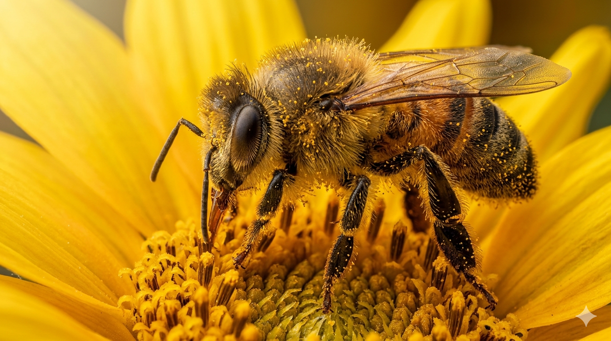
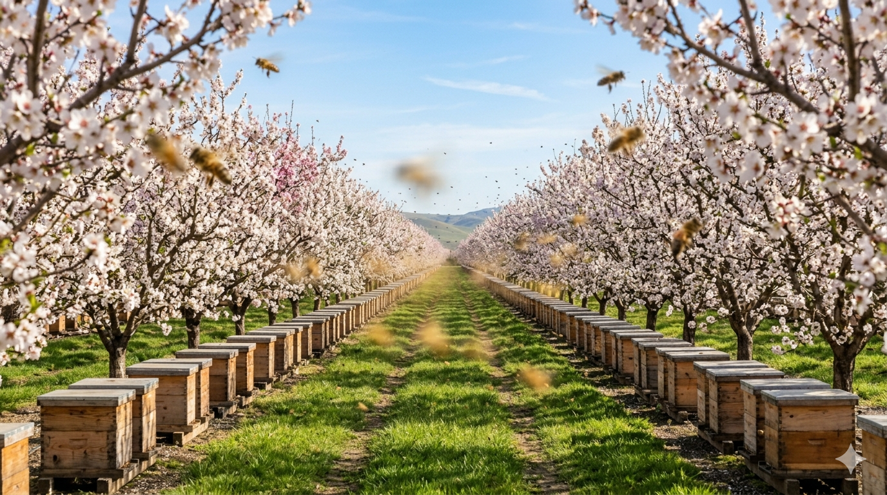
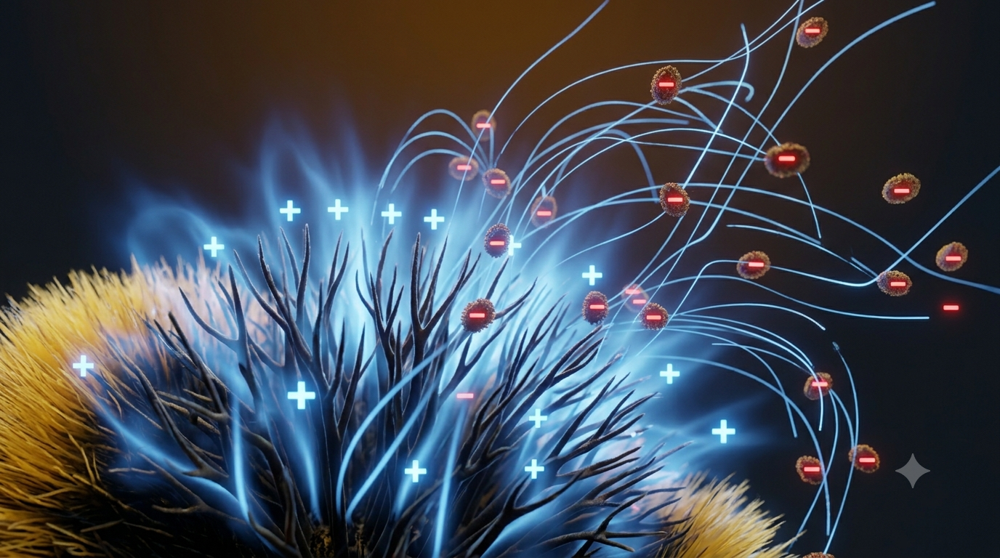
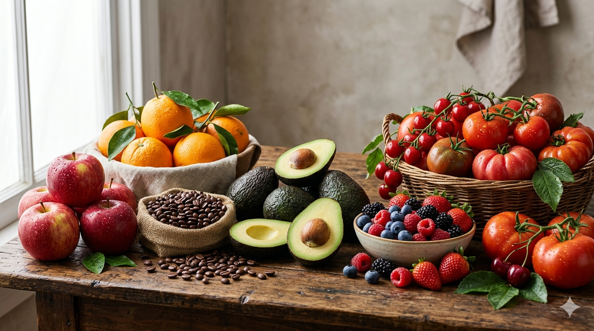
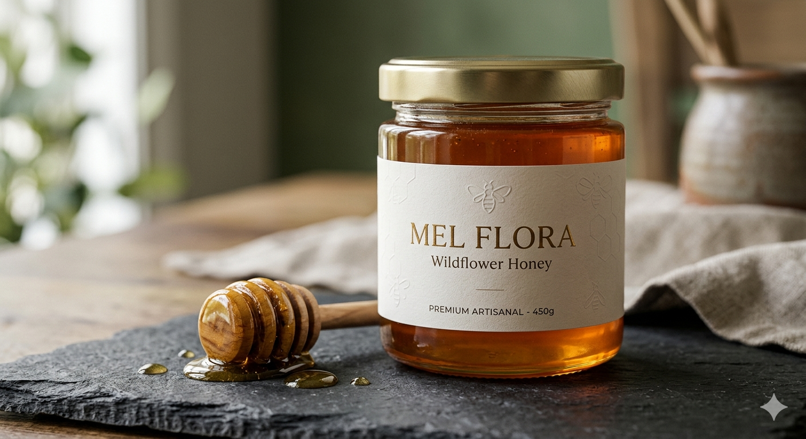
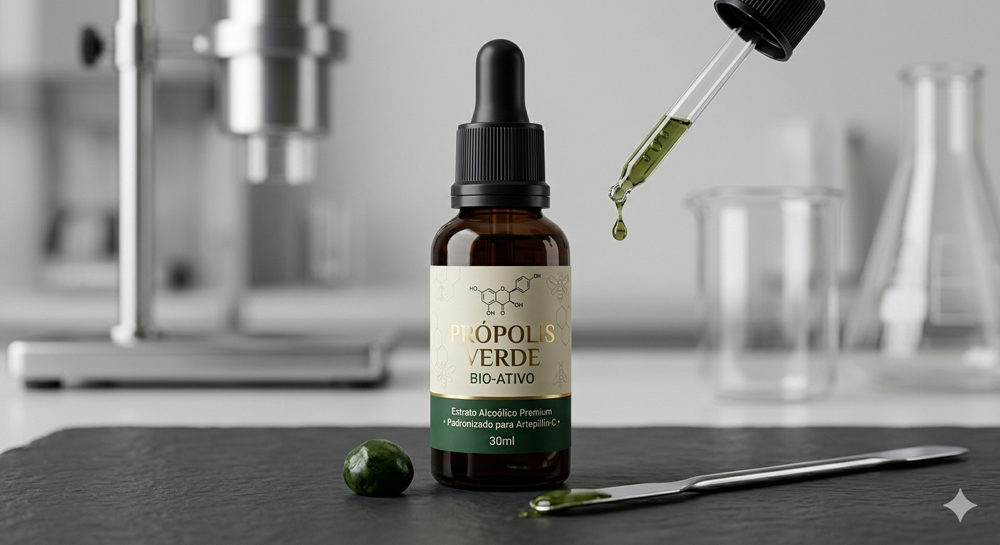
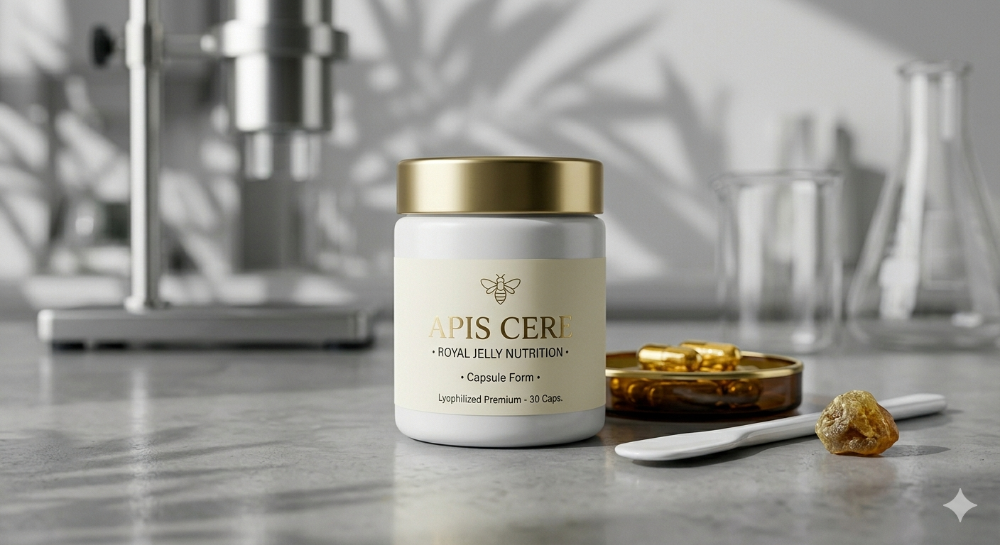

Esta plataforma de documentação técnico-científica atua como um repositório analítico dedicado a expor o papel incomensurável dos Hymenopteras no equilíbrio biológico da biosfera. Longe de exercerem uma mera função produtora de mel, as abelhas operam como engenheiras ecossistêmicas críticas. Suas dinâmicas comportamentais e interações físicas de microescala regulam as taxas de especiação, a variabilidade genética e a resiliência estrutural das principais macroculturas de interesse antrópico.

Bilhões de indivíduos dependem diretamente das funções sistêmicas desempenhadas pelos polinizadores bióticos. A degradação antropogênica contínua dessas populações, induzida pelo uso indiscriminado de agroquímicos neurotóxicos e pela fragmentação extrema de habitats, impõe uma severa vulnerabilidade à segurança nutricional global. Os polinizadores atuam como garantidores de que os gametófitos masculinos fertilizem de maneira ideal as estruturas receptoras das plantas, desencadeando rotas metabólicas que culminam em sementes de alta viabilidade celular e frutos com perfis moleculares ricos em macronutrientes cruciais.
A polinização cruzada regula de maneira direta a biossíntese de vitaminas lipossolúveis (A, D, E, K) e hidrossolúveis (C) essenciais na homeostase metabólica humana.
A preservação dos vetores melíferos garante a integridade fitossociológica das florestas tropicais, agindo indiretamente na ciclagem de nutrientes e regulação hídrica.
Culturas agrícolas de alto valor financeiro internacional dependem de forma exponencial das taxas de visitação biótica para assegurar o índice de conversão econômica.

Conforme amplamente validado em ensaios acadêmicos internacionais, a transferência mecânica de grãos de pólen das anteras para os estigmas é aperfeiçoada por propriedades elétricas físicas reguladas pelo efeito triboelétrico. Durante o voo, o atrito cinético do corpo da abelha com as correntes de ar induz a perda contínua de elétrons de sua cutícula e cerdas ramificadas, gerando um acúmulo estável de carga líquida estática positiva (+). Em contrapartida, as estruturas florais, inseridas no potencial de aterramento terrestre, mantêm-se eletricamente induzidas com cargas superficiais negativas (-).
No momento em que a abelha atinge o limiar de aproximação milimétrico da flor, a magnitude desse campo elétrico local supera as forças de coesão molecular que retêm o pólen na antera. Esse diferencial cria uma força de atração coulombiana que projeta os grãos de pólen macroscopicamente pelo espaço aéreo, atraindo-os ao revestimento do inseto sem que haja necessidade de compressão física inicial. Adicionalmente, dinâmicas de polinização por vibração acústica de alta frequência (buzz pollination), exercida por gêneros especializados, provocam a ressonância mecânica de anteras poricidas, liberando o pólen aprisionado em culturas economicamente críticas.

A produção agrícola de alta densidade técnica torna-se inviável se isolada do equilíbrio populacional dos polinizadores. O pegamento completo dos frutos desencadeia a síntese regulada de fitormônios endógenos (como auxinas e giberelinas) nos tecidos vegetais, o que otimiza de forma expressiva o acúmulo de matéria seca, açúcares solúveis e antioxidantes. Cenários analíticos de declínio dessas populações indicam uma crisis inflacionária severa e desequilíbrio calórico global, afetando diretamente a oferta e homogeneidade morfológica de culturas perenes como abacates, café, laranjas, maçãs e tomates.

Nossos bio-produtos provêm de ecossistemas controlados, livres de contaminantes químicos e metais pesados. Toda a extração respeita rigorosos protocolos agroecológicos de mínima intervenção, garantindo a preservação das frações moleculares e bioativas originais geradas pela simbiose flor-vetor.

Superfície enzimática preservada. Rico em flavonoides residuais e ácidos fenólicos com alta capacidade de atenuação de radicais livres (ORAC elevado).

Isolado biológico derivado do Baccharis dracunculifolia. Concentração molecular mínima certificada de Artepillin-C (superior a 7.5mg/ml).

Estabilizada via criodesidratação a vácuo para preservação total do ácido 10-hidroxidecenóico (10-HDA), cofatores enzimáticos e imunoglobulinas.